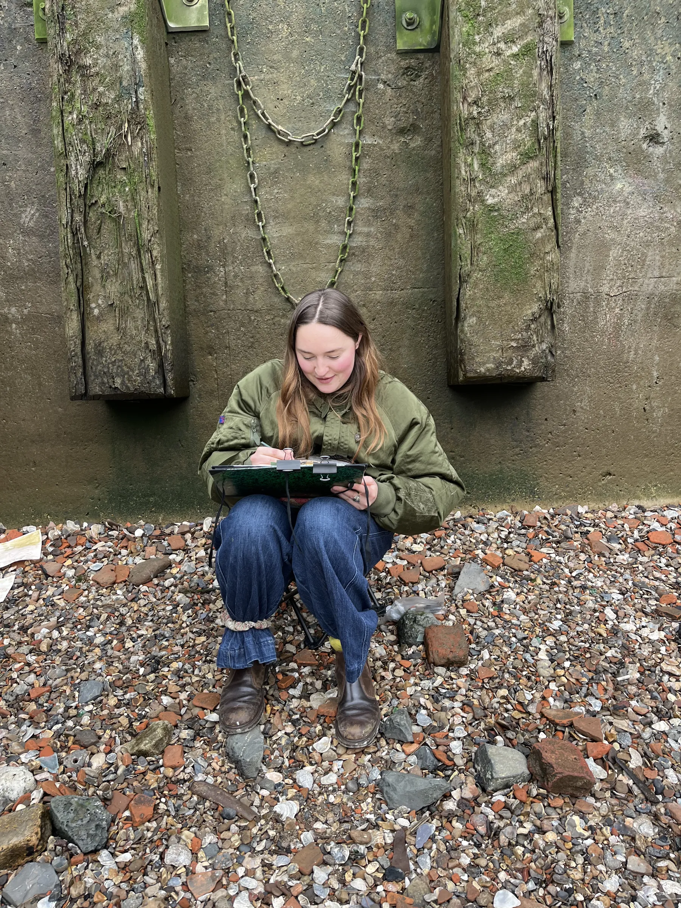

Alice J Calvert (b. 1999, Bath) graduated from Camberwell College (UAL) with a BA in Fine Art, Drawing in 2022 before joining the Royal Drawing School in 2025. Calvert occupies landscapes and interior scenes with loved ones cast as recurring characters, painted with aching intensity and bright colours. Favouring a watery and disobedient line, she opts for saturated watercolours or solvent-heavy paints to explore the tension between control and chaos.